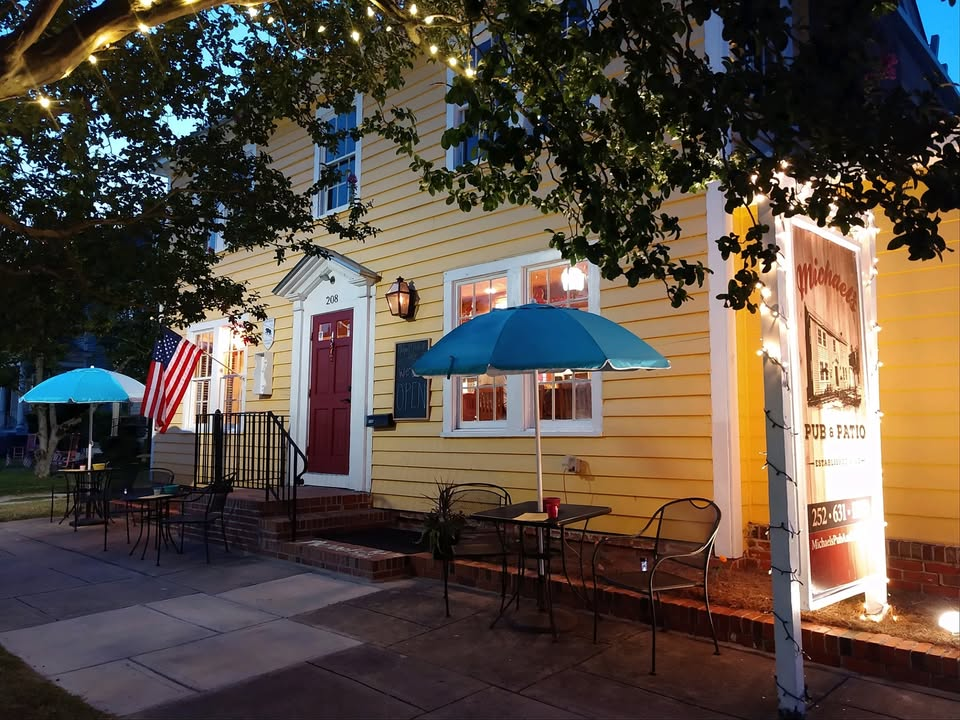
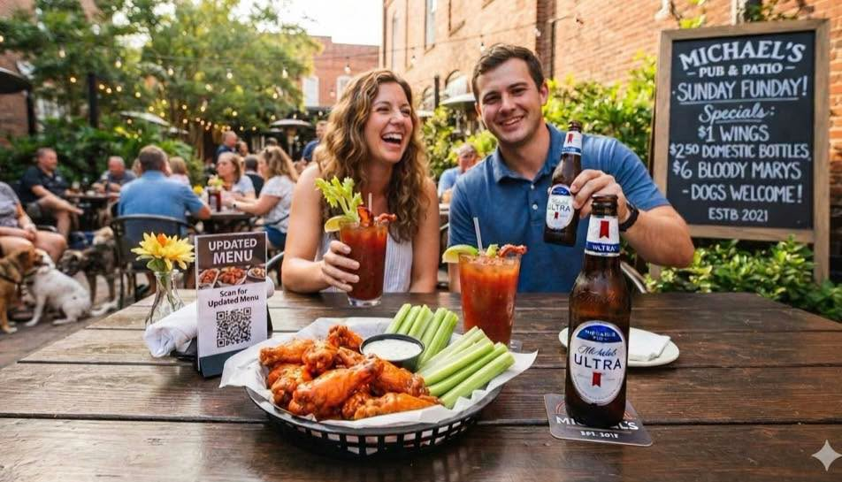
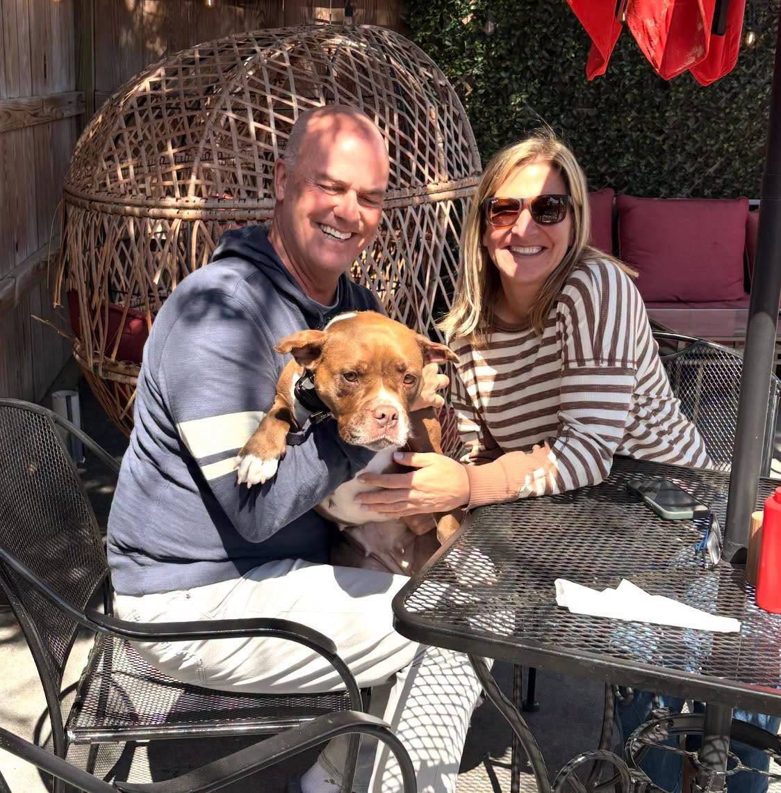
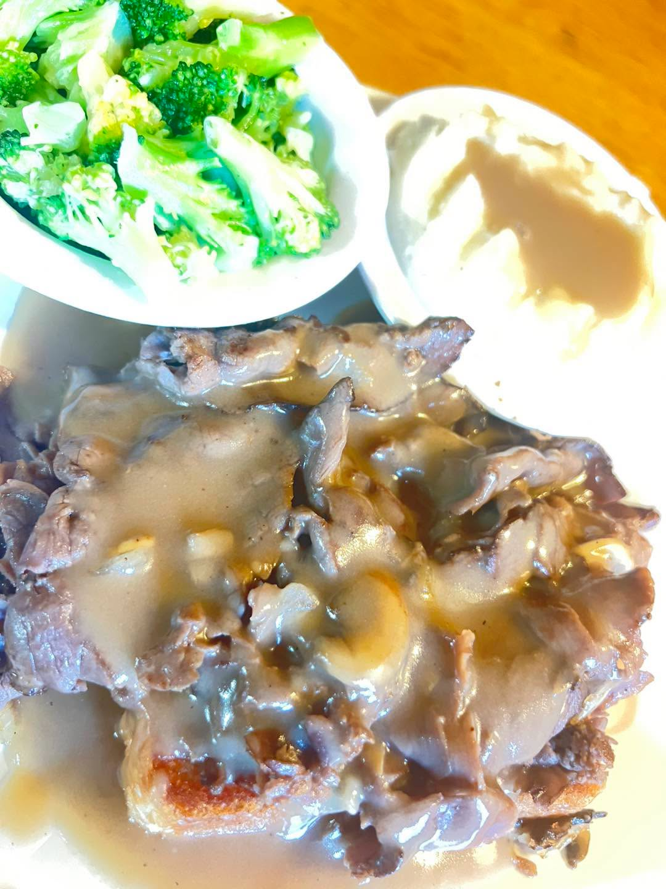

A historic Pollock Street house, turned into the neighborhood's living room.
Michael's opened in the heart of downtown New Bern in a converted early-1900s home, tucked between the municipal buildings and the boat docks. We kept the bones of the house — the porches, the courtyard, the creaky charm — and filled it with a full bar, an upstairs dining room, and two outdoor patios.

Good ol' southern hospitality
Everything we serve is built on the same idea: a menu that isn't afraid of a little jerk-spiced heat, jumbo wings, and prices that keep locals coming back every week.
Established downtown
Dog-friendly patios
Wing Sunday
Leash required? Never for the welcome



Word travels fast on Pollock Street
What locals say about the patio, the wings, and bringing the dog.
Regulars describe Michael's as their standing go-to, praising the patio seating, the food, and a staff that always makes them feel welcome.
Guests consistently point to the fried seafood and jumbo wings as standouts, calling the Sunday wing special some of the best in town.
Diners with dogs often mention the fresh water bowls and dedicated dog menu, calling it a favorite downtown stop for people and pets alike.